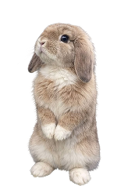
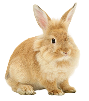
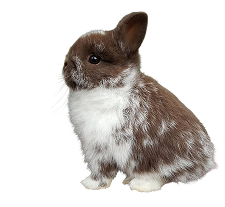
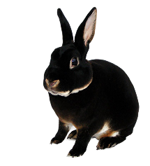
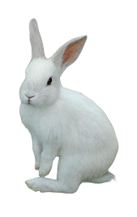

CURIOSIDADES
- São lagomorfos, não são roedores!
- A expectativa de vida é de 8 a 12 anos.
- Na natureza, animal doente vira presa. Então eles disfarçam MUITO a dor.
- Não devem ser mantidos em gaiolas.
- Não podem comer muita cenoura como todos acham.
- São atendidos apenas veterinário de exóticos/silvestres.

ALIMENTAÇÃO
80% da alimentação deve ser de feno. Frutas apenas como petisco, evitando as ácidas. Pouca quantidade de ração específica para coelhos.
O QUE DAR:
- rúcula
- coentro
- salsinha
- escarola
- talo de beterraba
- folhas de cenoura
- folhas escuras
O QUE NÃO DAR:
- alface
- pão
- laticínios
- carnes
- alho
- cebola
- chocolate
- biscoitos
TEMPERAMENTO
- Eles não são iguais a gatos/cachorros.
- Muitos Não gostam de colo.
- Muitos são ariscos e territorialistas.
- Se assustam fácil.
- São sensíveis a barulho alto.
.・。.・゜♡・゜・。.ALGUNS TIPOS DE COELHOS・。.・゜♡・゜・。.

Holland Lop/p>

Lionhead

Mini lop

Black Otter

Coelho Nova Zelândia